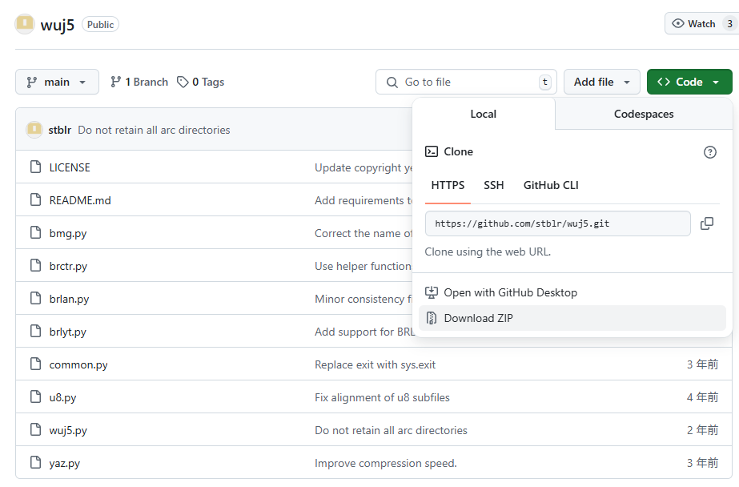
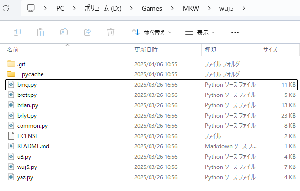

目次
はじめに
これまで、バイナリ編集やパワープレー(BRLYTファイルのテキスト格納部分に文字をたくさん入力すること)で対処してきましたが、バイナリ編集は時間がかかるし、パワープレーは時間こそはかからないものの、あまり美しい修正方法ではありません。
自分しか使わない場合はパワープレーを推奨したいところですが、共有する可能性がある場合は以下の方法で作っておくと一目置かれます。
今回紹介する方法で、テキスト欠落バグを修正していきましょう。
この記事の対象者
- BRLYTを編集した経験がある
- ターミナル(コマンド プロンプト等)を使用した経験がある
- より美しくファイルを整えたい
参考にした動画
こちらの動画ではbenzinを使用していますが、編集のしやすさを考慮してwuj5を使用します。
必要なもの
-
wuj5 by stblr (Python 3, json5が必要です)
-
テキストエディタ (Visual Studio Code, NotePad++など)
今回は、バグ修正のために必要なツールのみを紹介しています。
0. Python環境の準備
Pythonの環境を用意したことがない方は、以下の記事を参考にして環境を用意してください。 MacOSやLinuxを使用している方は、同様の記事を検索して進めてください。
Pythonの開発環境を用意しよう！（Windows）[プロゲート]1. wuj5の準備
-
リンクからGitHubのリポジトリにアクセスして、Code > Download ZIPを押す。
 -
任意の場所でZIPファイルを展開しましょう。ダウンロードフォルダではなく、デスクトップやドキュメントなどに置いておくことを推奨します。
-
ターミナルはどこで開いても構わないのですが、今回はwuj5がある場所でターミナルを開きます。Windows11を使用している場合は以下の画像の場所で右クリック→ターミナルを開くでターミナルを開けます。
 -
使用するにはjson5というパッケージが必要なので、ターミナル上で以下を入力します。
pip install json5自動でダウンロードが始まり、Successfully installedと出力されていれば導入完了です。
2. BRLYTファイルを変換する
wuj5を使用すると、BRLYTファイルをJSON5形式に変換することができます。
JSON (JavaScript Object Notation)は、軽量のデータ交換フォーマットです。人間にとって読み書きが容易で、マシンにとっても簡単にパースや生成を行なえる形式です。
参考文献『JSON』より引用
JSON5はJSONを拡張したフォーマットなので、上の引用を理解すれば問題ありません。JavaScript…など書いてありますが、今回の作業ではプログラミング知識は必要ありません。
まずは、wuj5のフォルダに編集したいBRLYTファイルをコピーします。今回は、common_w017_message.brlytを使用してみます。
(Customフォルダは自分が追加したものです。ZIPには同梱されていません。)
先ほどと同様の手順でターミナルを開き、以下を入力します。
python wuj5.py decode common_w017_message.brlytこれを実行すると、同じフォルダ内にcommon_w017_message.brlyt.json5というファイルが生成されます。エラーが出る場合は、実行場所が間違っていないか確認してください。
3. JSON5ファイルの編集
このファイルをテキストエディタで開いて、編集していきましょう。検索機能を使用して、"maximum string size"と"string size"が書かれている場所を探してください。
重要ポイント
- ファイルによって横に書かれている数字が異なりますが、この2つの数字を改変することでテキスト上限を変更できます
- MKWiiにおいては書かれている数字の半分が表示できる文字数になると考えてください
- 数値は偶数にしておくことをおすすめします
計算式
(MKWiiで表示できる文字数) = ("maximum string size"の数字) ÷ 2今回においては、216ではなく、その半分の108が実際に表示できる文字数となるわけです。ここでは、250文字程度の上限であれば問題なく表示できると思うので、"maximum string size"と""string size"を500に変更します。
Tips
BRLYTファイルによってテキスト上限が異なるため、場合に応じて変更してください。例えば、Miiの名前を表示する場所では、上限が11文字以上である必要はありません。この時、わざわざ250文字も確保しても意味がないため、"maximum string size"と""string size"は20に設定しておけば問題なく表示されるはずです。
変更したら保存してテキストエディタは閉じて構いません。
4. JSON5ファイルをBRLYTファイルに変換する
先ほどと同様の手順でターミナルを開き、以下を入力します。
python wuj5.py encode common_w017_message.brlyt.json5編集前のBRLYTファイルは上書きされるので、注意してください。
変換したBRLYTファイルを自分のSZSなどに移植して動作を確認します。
無事にテキスト欠落バグを修正できていれば作業完了です。お疲れ様でした。
注意点
修正したBRLYTファイルを編集して保存するとまた同じバグが発生します。何回も編集するときはパワープレー形式で一時的にテキスト上限を開放し、最終調整が終わった後で今回の手順で修正すると良さそうです。それではまた。